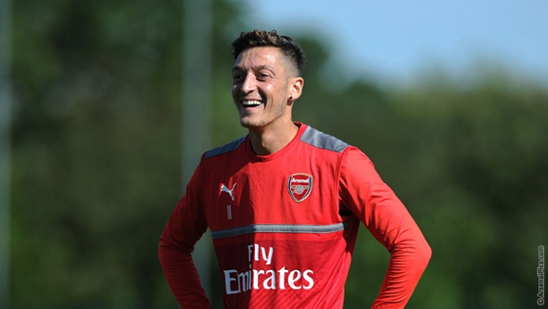

Welcome to my arsenal fan page
INTERVIEW: Arsenal star Mesut Ozil gunning for glory after finest Premier League campaign Sport360's Alex Rea chats to Arsenal star Mesut Ozil in Dubai about Arsene Wenger’s future, why they didn't win the Premier League and remoulding Germany for Euro 2016.
Team news: Ozil, Giroud and Ramsey Arsene Wenger reveals the latest updates ahead of Saturday’s Premier League game against Swansea